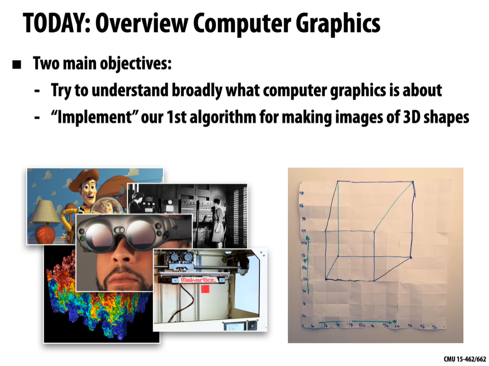
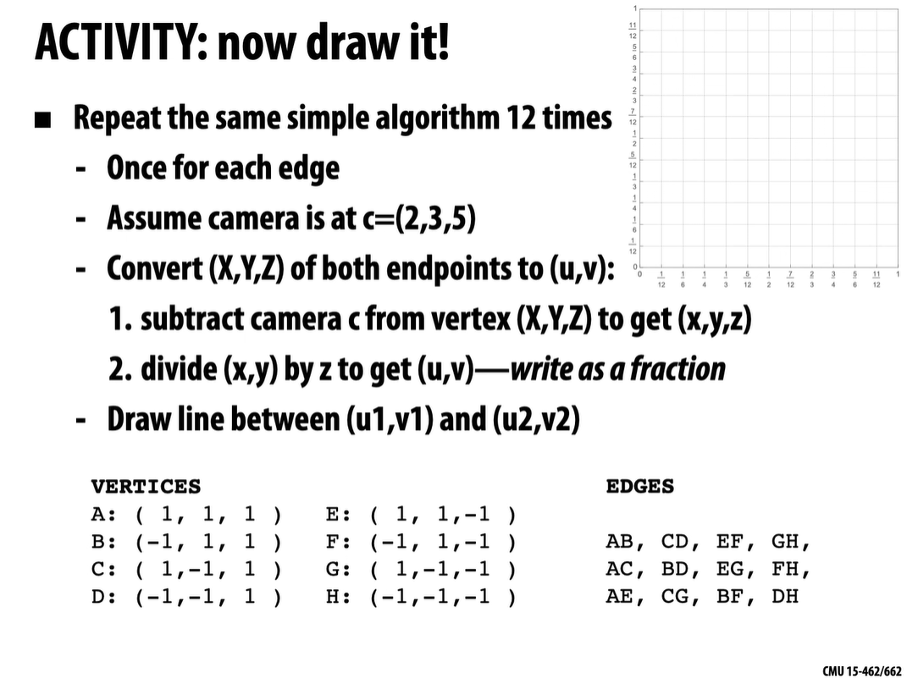
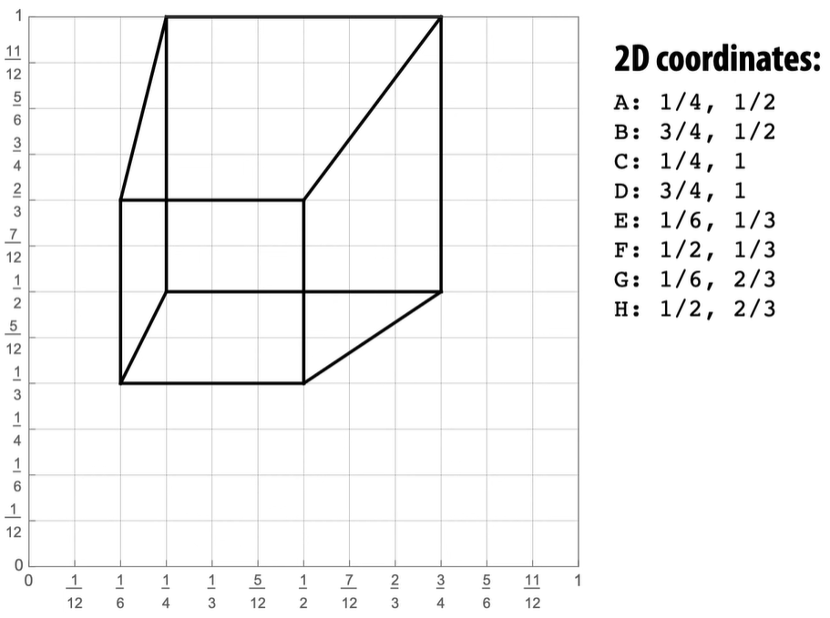
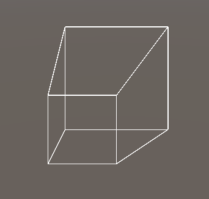
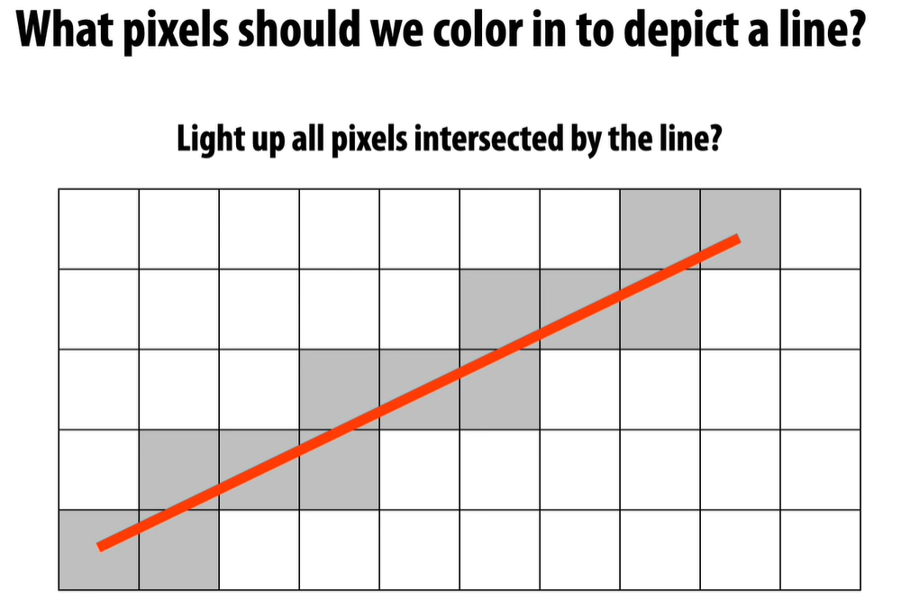
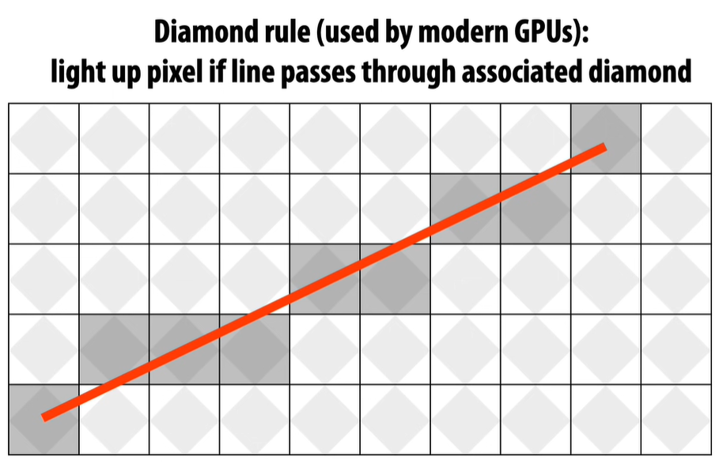

The first challenge, to understand a drawing algorithm:

The result is supposed to look something like this:

My approach in Unity:

Managed to get this with Gizmos.DrawLine(), but it came out inverted for some reason. Also, make sure the camera is set to orthographic and looking back, rotated -180 on Y.
Here's the code:
using UnityEngine;
public class LinePlotterCube : MonoBehaviour
{
public Camera mainCam;
public Vector3 camPos;
public Vector3[,] edges;
void Start()
{
camPos = new Vector3(2, 3, 5);
mainCam.transform.position = camPos;
Vector3 A = new(1, 1, 1);
Vector3 B = new(-1, 1, 1);
Vector3 C = new(1, -1, 1);
Vector3 D = new(-1, -1, 1);
Vector3 E = new(1, 1, -1);
Vector3 F = new(-1, 1, -1);
Vector3 G = new(1, -1, -1);
Vector3 H = new(-1, -1, -1);
edges = new Vector3[12,2] {
{ A, B },
{ C, D },
{ E, F },
{ G, H },
{ A, C },
{ B, D },
{ E, G },
{ F, H },
{ A, E },
{ C, G },
{ B, F },
{ D, H }
};
}
private void OnDrawGizmos()
{
for (int i = 0; i < edges.GetLength(0); i++)
{
for (int ii = 0; ii < edges.GetLength(1); ii++)
{
//1- Subtract camera c from vertex
Vector3 uv1 = edges[i, 0] - camPos;
Vector3 uv2 = edges[i, 1] - camPos;
//2 - Divide (x,y) by z to get (u,v)
uv1 = new Vector3(uv1.x / uv1.z, uv1.y / uv1.z, 0);
uv2 = new Vector3(uv2.x / uv2.z, uv2.y / uv2.z, 0);
Gizmos.DrawLine(uv1, uv2);
}
}
}
}
Color everything touched by the line:

Diamond rule:

Ok, so while talking about rasterization rules, he mentioned O(n) notation. I'm not familiar with this, embarrassingly enough. But that changes now!
Ok, I've read it. Very elucidating.
That's the end of the lecture. I'm very excited for the next one.